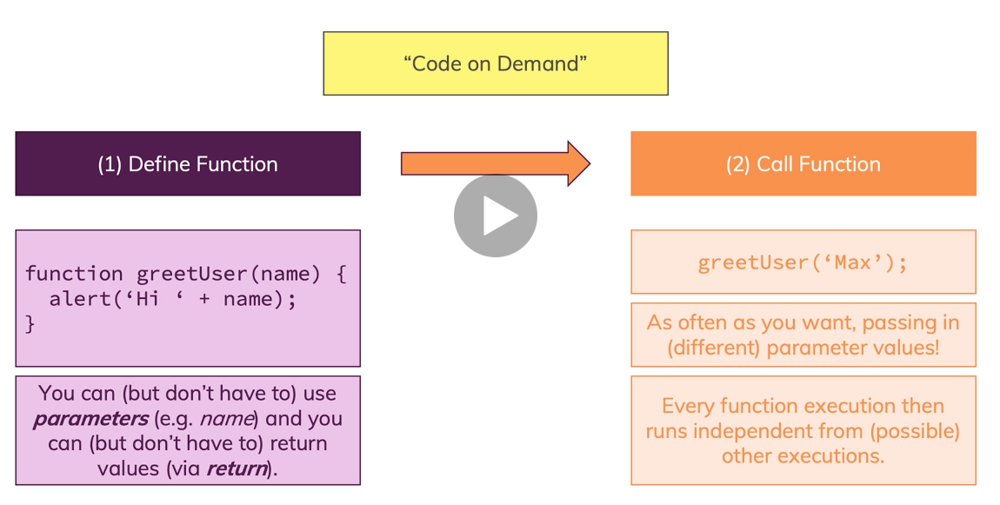

undefined De waarde undefined betekent dat er geen waarde aan de variable is toegekend.
Boolean De waarde is altijd true of false.
String De waarde is altijd een tekst. Een tekst staat altijd tussen dubbele quotes (“”). Bijvoorbeeld, “Dit is een tekst”
Number De waarde van een Number is altijd een getal.
BigInt Een BigInt lijkt heel veel op Number. De waarde van BigInt is een getal en eindigt op n. Bijvoorbeeld 3n. Het grootste verschil tussen BigInt en Number is dat BigInt oneindig getallen kan opslaan. Dit is niet nodig om te onthouden.
Symbol Symbol wordt gebruikt om de waarde een unieke key van te maken. Dit wordt heel weinig gebruikt en is niet nodig om te onthouden.
Null De waarde is een null als de waarde ook expliciet op null gezet wordt. Null wordt vaak gebruikt om aan te duiden dat de waarde niet bestaat.
Object Een object is een groepering van variables en functies. Je kan het zien dat variables in een object de eigenschappen zijn en functies het gedrag van dat object. Objecten zul je vaak tegenkomen, omdat je ook objecten kunt maken.
Function Een functie is een set aan regels of acties die uitgevoerd worden. Aan een functie kun je een leesbare naam geven. De naam representeert de actie die uitgevoerd wordt.
Var var is de voorganger van let en wordt door oudere browsers ondersteunt. Tegenwoordig wordt var niet meer gebruikt en is het vervangen door let
Let let is de nieuwe manier om waarde vast te houden. Wanneer je let gebruikt is de waarde mutable. Dat wil zeggen dat je de waarde van de variable kan aanpassen.
Const Const wordt ook gebruikt om waarde vast te houden. Het verschil tussen let en const is dat const immutable is. Dat wil zeggen dat wanneer je een waarde hebt toegekend aan een variable dat het dan ook niet meer te wijzigen is. Het niet toewijzen van een waarde aan een variable zal een error geven.
Built in methods houdt in dat er een set aan functies die al voorgedefinieerd zijn die je kunt gebruiken. Een bekende voorbeeld met built in methods is de String. String is een object. Dat kun je herkennen doordat String met een hoofdletter geschreven is. Het is een geschreven regel dat objecten met een hoofdletter begint. Daardoor kun je het herkennen dat het een object is. Binnen objecten heb je functies die je kunt gebruiken. Later zullen wij onze eigen objecten maken met onze eigen functies.
https://developer.mozilla.org/en-US/docs/Web/JavaScript/Reference/Global_Objects/String| Opdrachten over undefined en getallen aan variable toekennen | Opdracht 1 t/m 4 | ||
| Opdrachten over de verschillende data types herkennen | Opdracht 5 en 6 | ||
| Opdrachten wat je met Numbers kan doen | Opdracht 7 t/m 11 | ||
| Opdrachten wat je met String kan doen | Opdracht 12 t/m 15 | ||
| Opdrachten met built in methods | Opdracht 16 | ||
Condities kun je programmeren in javascript. Je hebt bij condities te maken met
voorwaardes en acties.
Als je aan een bepaalde voorwaarde voldoet, dan kan je bepaalde
actie uitvoeren.
Een voorbeeld waar je een keuze zou kunnen maken is wanneer je van plaats A naar plaats B
reist.
Welke vervoersmiddel je pakt is afhankelijk van de conditie. Als het belangrijk is
dat je
binnen nu en 30 min op jouw bestemming moet zijn, dan zal je de auto moeten nemen. Als je
er een uur kan zijn, dan kan je overwegen om de fiets of de tram te pakken. Als je er een uur
kan zijn en je wilt geen kosten maken, dan neem je de fiets.
Met het voorbeeld die ik net noemde is de voorwaarde verbonden aan tijd en
kosten.
En de actie is het daadwerkelijk reizen naar jouw bestemming met een
vervoermiddel.
| Opdrachten over if statements met comparison operators | Opdracht 1 t/m 8 | ||
| Opdrachten over if statements met logical operators | Opdracht 9 t/m 12, Opdracht 13, Opdracht 14, Opdracht 15 | ||
Functions zijn coding blocks die uitgevoerd worden. Het idee achter functies zijn het uitvoeren van specifieke taken. Er zijn aantal regels die je moet kennen om de kracht uit functies uit te halen. Door goed gebruik te maken van functies is je code veel leesbaarder.
